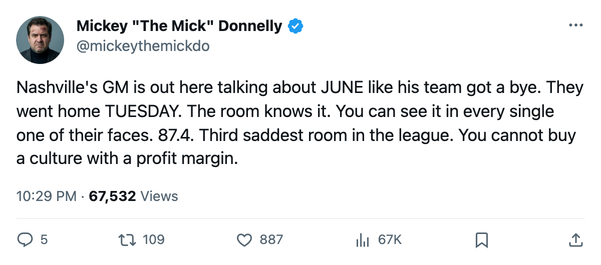
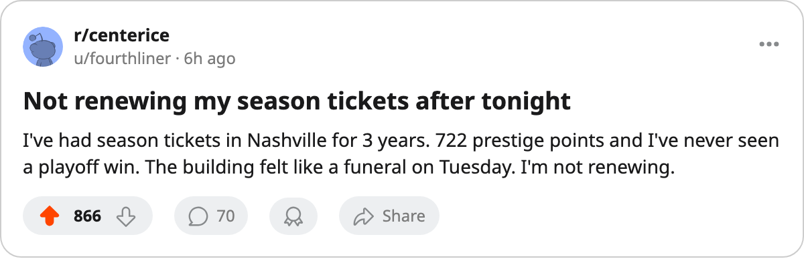

YOUR GM SAYS JUNE. YOUR PLAYERS ARE ON THE BEACH IN APRIL
Som Richards has a free-agency plan for July. His room has a morale grade of 87.4 and a 4-2 first-round result to prove it matters.
 Mickey "The Mick" DonnellyColumnist, ex-goalie · The Penalty Box
Mickey "The Mick" DonnellyColumnist, ex-goalie · The Penalty Box Nashville Predators went home on Tuesday. 42 wins, 101 points, the 3rd seed in the West, and a 6th-seed
Nashville Predators went home on Tuesday. 42 wins, 101 points, the 3rd seed in the West, and a 6th-seed  Mighty Ducks of Anaheim club with 32 wins put them out in 6 games. The Nashville room is empty. The Nashville GM is on television talking about July.
Mighty Ducks of Anaheim club with 32 wins put them out in 6 games. The Nashville room is empty. The Nashville GM is on television talking about July.
Som Richards told The Tunnel's Jan Kowalczyk after the season: "You don't have to be a buyer if what you add makes you a better team in June. Not in March. In June." I read that three times. There is no June. His players are on the beach in April.
Here is what the sheet shows about Nashville. Nashville Predators runs a $46.77M payroll. They banked $27.16M in profit. They charge $80 a seat to 15679 people a night. They carry 722 prestige points, the most of any club in the league, more than  New Jersey Devils (704), more than
New Jersey Devils (704), more than  Minnesota Wild (659). And their room grades 87.4 on the Bureau's Morale Scale, the 3rd lowest number in the league.
Minnesota Wild (659). And their room grades 87.4 on the Bureau's Morale Scale, the 3rd lowest number in the league.
722 prestige and 87.4 morale. Those two numbers should not live in the same building. Prestige measures what the club has done. Morale measures how the men feel doing it. Nashville's men feel like 3rd-from-bottom hockey.
The overpaid man at 10.7 minutes a night
 Andreas Johansson81 makes $2.70M with 3 years left on his deal. He plays 10.7 minutes a night. His overall is 78. His morale is 72, which puts him on the Bureau's bottom-15 list across the whole league. He is a $2.70M player skating fourth-line minutes in a building with the most prestige points in hockey, and his room is one of the saddest in the conference.
Andreas Johansson81 makes $2.70M with 3 years left on his deal. He plays 10.7 minutes a night. His overall is 78. His morale is 72, which puts him on the Bureau's bottom-15 list across the whole league. He is a $2.70M player skating fourth-line minutes in a building with the most prestige points in hockey, and his room is one of the saddest in the conference.
That is what happens when you build a profit model and call it a hockey club. The profit is real. The $27.16M is real. The 42 wins are real. The 4-2 loss to a 32-win team is also real, and it happened in April, not June, not July, not whenever Som Richards wants to be aggressive in free agency.
Richards also said: "The core is locked. And that gives me something most of these clubs don't have right now. I can wait in free agency." Wait for what? Your players watched Mighty Ducks of Anaheim celebrate from the bench on Tuesday night. The core is locked in a building where the seats are empty by May.
I wrote on 2005-03-19 that the deadline meant nothing because nobody moved. Neither did the other 29 clubs. I was wrong about what that proved. Nobody moving at the deadline is not the model working. It is the model running out of road. Nashville had the best record in their division for most of the season, 42 wins. A 32-win team had more gas in the tank in April because the Ducks at least had a roster that could close games.
You want June, Som? Go get it. Your fans wanted April.

